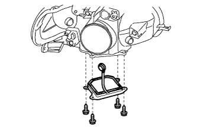
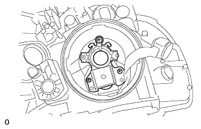

ヘッドランプASSY 組み付け |
| 1. ヘッドランプレベリング モータ LH取り付け |
モータを回転させ、ヘッドランプレべリングモータLHを取り付ける。
ヘッドランプレベリングモータLHを回転させ、図に示す位置に取り付ける。
| 2. ヘッドランプ NO.1 バルブ取り付け（ハロゲンヘッドランプ） |
セットスプリングでヘッドランプバルブNO.1を取り付ける。
| 3. ヘッドランプ ソケット カバー取り付け（ハロゲンヘッドランプ） |
|
ヘッドランプソケットカバーをランプボデーに取り付ける。
| 4. ヘッドランプ ソケット カバー取り付け（ディスチャージヘッドランプ） |
ヘッドランプソケットカバーを取り付ける。
| 5. ヘッドランプ ガスケット取り付け（ディスチャージヘッドランプ） |
ヘッドランプガスケットを取り付ける。
| 6. ヘッドランプ ライト コントロール コンピュータ ASSY LH取り付け（ディスチャージヘッドランプ） |
コネクターを接続する。
 |
スクリュー4本でヘッドランプライトコントロールコンピュータASSY LHを取り付ける。
|  |
スクリュー3本でリフレクタASSYを取り付ける。
| 7. ディスチャージヘッドランプ バルブ取り付け（ディスチャージヘッドランプ） |
 |
セットスプリングで、ディスチャージヘッドランプバルブを取り付ける。
 |
ライトコントロールコンピュータのソケットを接続する。
| 8. ヘッドランプバック カバー NO.1取り付け（ディスチャージヘッドランプ） |
 |
ツメのかん合を合わせ、ヘッドランプバックカバーNO.1を取り付ける。
| 9. ヘッドランプ ソケット カバー取り付け（ディスチャージへットランプ） |
 |
コネクターを接続する。
ソケットを回し、ヘッドランプソケットカバーを取り付ける。
| 10. クリアランスランプ バルブ取り付け |
バルブソケットにクリアランスランプバルブを取り付ける。
| 11. クリアランスランプ ソケット取り付け |
バルブソケットを回し、バルブソケットと、クリアランスランプバルブを一体で取り付ける。
| 12. フロント ターンシグナルランプ バルブ取り付け |
バルブソケットにフロントターン シグナルランプバルブを取り付ける。
| 13. フロント ターンシグナルランプ ソケット取り付け |
 |
バルブソケットを回し、バルブソケットと、フロントターン シグナルランプバルブを一体で取り付ける。